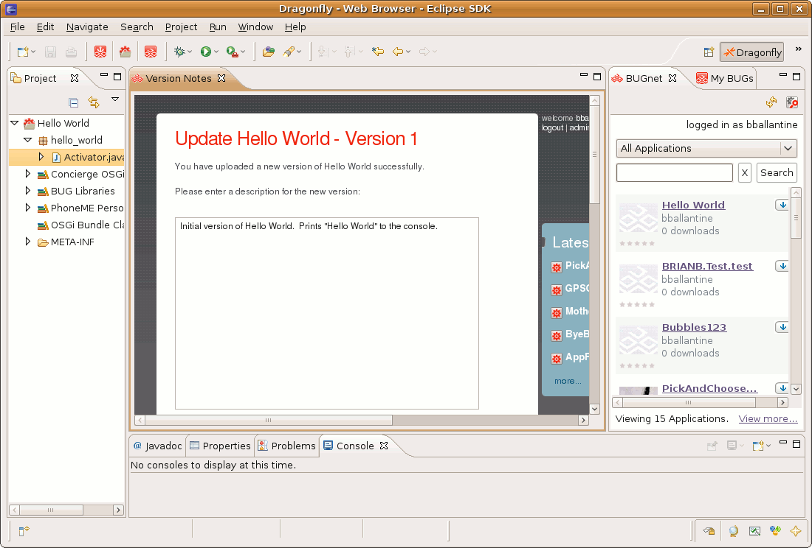

Upload an Application to BUGnet
A BUGnet account is required to upload applications. If you don't have BUGnet account you can click the here link to create one.
- In the Project Explorer, right-click the application and select Send to BUGnet.
(Note: You may also Drag & Drop applications from Project Explorer into the BUGnet view)
- If necessary, log in with your BUGnet username and password.

- When the upload is complete the BUGnet view will refresh and display your application.
- By default the first time you upload an application it will be marked as private on BUGnet.
This means that only you and any collaborators you have invited can see the
application. If you would like it displayed to the public, you will need to
remove the private setting by editing your application on BUGnet (this is also
where you can add collaborators).>/li>
- After the application is uploaded a Physical Editor Version Notes Window will open.
Here you can add specific notes to be attached to the version you just uploaded. Click Save to complete.
